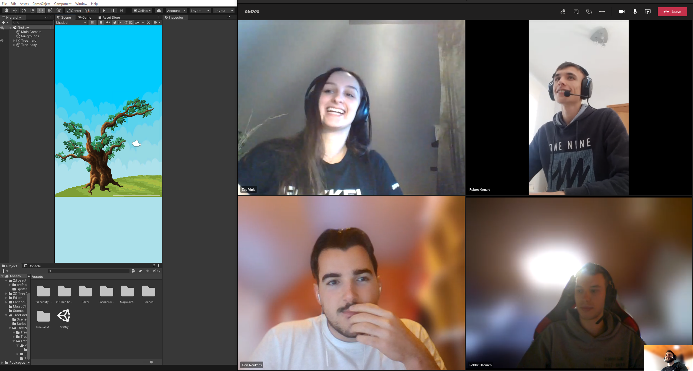
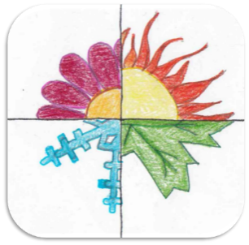
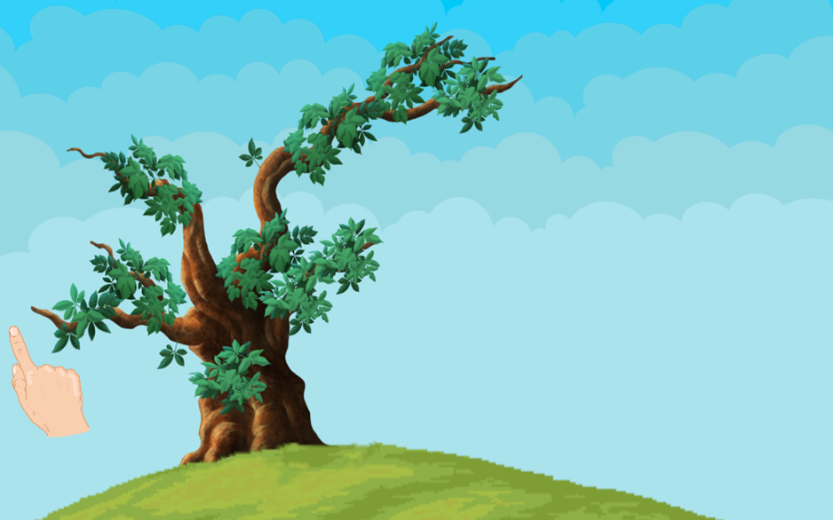
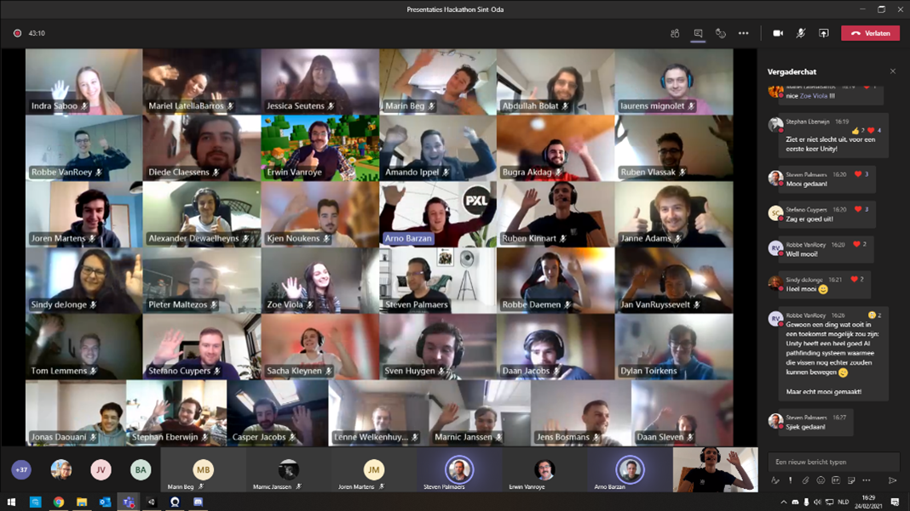

Omschrijving
Een hackathon, zoals de hackathon van Sint-Oda, is een event waar je met een groep aan een project kan werken over een bepaalde tijdsspanne met een gezamenlijk thema. Het centrale thema was is dit geval het maken van een mobiele game voor mensen met een ernstige meervoudige en matige tot diep verstandelijke beperking.
Ons team bestond uit 2 softwaremanagers, Robbe Daemen en Kjen Noukens, en 3 programmeurs, Zoe Viola, Bugra Akdag en ik.

Kern
2 studenten ergotherapie focussen zich voor hun bachelorproef op mensen met een verstandelijke beperking. Tot op heden zijn er weinig tablet- en computergames toegankelijk voor deze doelgroep. Hun onderwerp is het ontwikkelen van een screeningsinstrument in functie van het meten van gebruiksvriendelijkheid van computer- en tabletgames voor mensen met een ernstige meervoudige en matig tot diep verstandelijke beperking. Een screeningslijst kan ontwikkelaars helpen om een geschikt spel voor hen te ontwikkelen. Deze hackathon helpt bij dit onderzoek.
Het doel van de hackathon van Sint-Oda was om een mobiele game te maken voor mensen met een verstandelijke beperking zodat deze studenten hun onderzoek verder konden zetten. Hier kregen we 2 dagen te tijd voor. Elk deelnemend team kreeg een thema gekozen uit de 4 seizoenen. Wij hadden herfst als thema gekregen.
Het team zag de opdracht als een uitdaging en we hadden allemaal zin om eraan te beginnen. De eerste dag was er een bijeenkomt van alle teams waarbij we uitleg kregen over de opdracht en over Sint-Oda zelf. Hier werd alle uitleg gegeven over de eventuele technologieën die konden worden gebruikt maar ook over Sint-Oda zelf. Zo kwam ook naar voren dat er rekening moet worden gehouden met de inwoners van het dienstencentrum. Het is belangrijk dat de spellen niet te moeilijk worden gemaakt en dat er veel visuele en auditieve aspecten in voorkomen. Bij het herfst thema is het de bedoeling dat er een boom voorgesteld wordt waarna de gebruiker op de bladeren van de boom kan klikken om deze te laten vallen.
Aangezien we allemaal nog geen ervaring in game-development hadden we besloten om alle taken samen te doen en begonnen we met research te doen. Uiteindelijk hadden we een goede basis kennis om dit in de praktijk te gebruiken. Ook hadden we afbeeldingen van bladeren en van een kale boom gevonden om deze te gebruiken als boom. Nadat de visualisatie gelukt was kwam het moeilijk gedeelte eraan, het laten vallen van de bladeren bij een klik. Na veel proberen en uittesten namiddag hadden we op het einde van de dag een werkend maar standaard spel.
De tweede dag waren we klaar om de applicatie af te werken. We hebben geluiden en bewegingen toegevoegd om alles levendiger te maken. Ook hebben we een hand toegevoegd zodat de spelers weten wat ze moeten doen. Dit was één van de tips die we kregen om het makkelijker te maken voor de inwoners van Sint-Oda.
Op het einde van de tweede dag werd er een demomoment voorzien. Hier kon elk team hun spel tonen en er uitleg bij geven. Het waren allemaal goede resultaten en ook bij ons werd er een werkend product getoond.
Reflectie
We hebben in 2 dagen een mooi spel uitgewerkt en afgeleverd. We begonnen stroef en onwetend maar naarmate we verder gingen lukte het allemaal beter en geraakten we goed vooruit. Het samenwerken in team verliep ook goed. Aangezien niemand iets wist van game development hielpen we elkaar goed. Bij vragen of wanneer er iemand vast zat was er altijd wel iemand die hielp. Ook de communicatie zat zeker goed. We zaten beide dagen altijd in een call en waren zo samen aan het werken bij het maken van het spel. Het is jammer dat we geen voorgrond hadden in het maken van games wat ervoor zorgde dat we veel tijd verloren bij het researchgedeelte. Ik heb het gevoel dat als we meer tijd hadden we het spel nog meer konden uitbreiden en instellingen konden toevoegen wat het ook handiger zou maken voor de begeleiders van Sint-Oda. Ik steek deze activiteit in mijn portfolio omdat het een zeer leuke ervaring. Het was zeer tof om iets voor deze mensen te kunnen doen. Ook was het zeer interessant om een product te maken waarbij er rekening moest worden gehouden met mensen met een verstandelijke beperking. Het toont je dat je altijd rekening moet houden met de eindgebruikers bij het maken van een product.